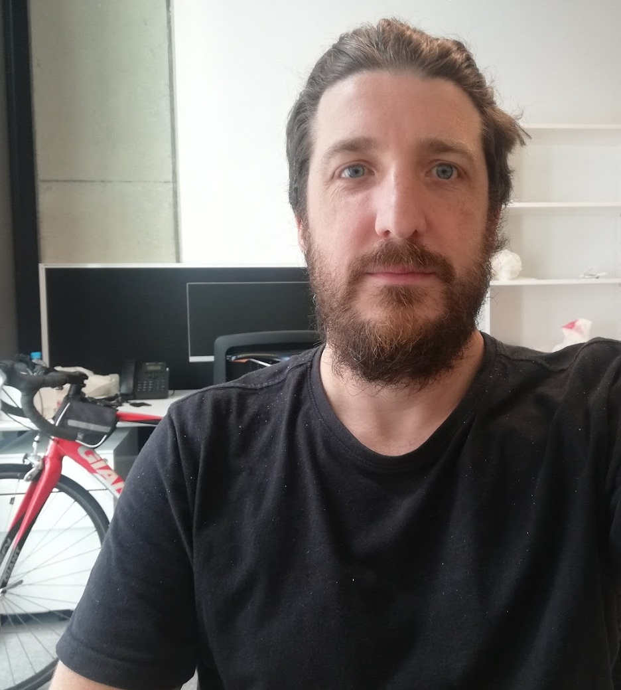

About
I am a physical chemist with extensive experience designing, building, optimising, and calibrating spectroscopic and atmospheric measurement instruments. My work spans laboratory, field, and airborne environments, with a strong focus on quantitative optical measurements, aerosol and cloud microphysics, and hyperspectral remote sensing.
I specialise in translating complex physical processes into robust, reproducible data products through careful instrument characterisation, calibration, and data analysis in Python and R. This portfolio highlights selected interactive visualisations, retrieval tools, and analysis workflows developed in support of atmospheric and environmental research.
This is a work in progress...